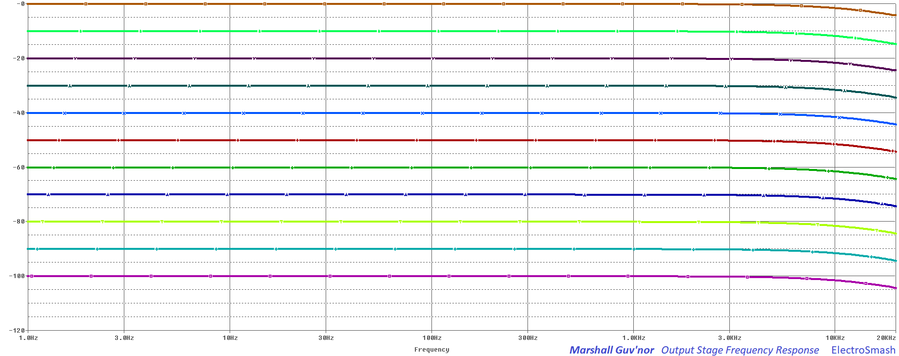

The Guv'nor was the first guitar pedal designed by Marshall, released in 1988 and in production during 4 years. This overdrive/distortion Made in England effect replicates the classic tube Marshall Amp sound into compact and solid state box featuring a sustainable gain with a touch of compression. There are later Guv'nor MK2 models in a different enclosure, but most people prefer the sound of the original discontinued model.

In this article, we are going to study the original design and see what are the bits that make this effect so desired.
Table of Contents.
1. Marshall Guv'nor Schematic.
1.1 The Power Supply Stage.
1.2 The Input Stage.
1.3 Clipping Stage.
1.4 Tone Control Stage.
1.5 Output Stage:
1. Marshall Guv'nor Schematic.
The Guvnor circuit can be divided into 5 blocks: Input Stage, Clipping Stage, Tone Control, Output Stage and Power Supply:
The Guv'nor schematic is simple but perfectly tuned: One dual op-amp boosts the signal using the Gain knob. In the clipping stage, 2 diodes to ground will hard-clip the guitar signal. This boosted and clipped waveform passes through the tone stack (with independent bass-mid-treble potentiometers) and finally, the output stage will adjust the volume level. The original circuit has a stereo 1/4" effects loop just before the pedal's output, allowing the Guvnor to include any pedal in its own loop (you would need a custom 1/4" Y-cable with tip-send and ring-return).
Marshall The Guv'nor + Circuit Layout
The original circuit is made using two double-sided PCBs: one contains the potentiometers and core circuit and the second one accommodates the audio/power jacks. The connection between elements is made by hand-soldered wiring. Although the enclosure and the feel of the pedal are sturdy, some parts of the pedal are famous for their fragility: the jacks (a good substitute is the Fender #0059922000 jack) and the footswitch (standard 2P2T) have a limited lifespan. Because of this factor (and discontinuity), this effect is a good candidate for DIYers.
The first models were made in England, later boxes look the same but were made in Korea and at the end of its production life, the pedal was made in Taiwan. The serial number plate on the battery cover should say where each box was built.
1.1 Marshall Guv'nor Power Supply Stage.
The Power Supply Stage will generate bias voltage (+4.5V) and energy (+9V) for the circuit:
The Guvnor uses a rather minimalistic power supply:
- Two 47K resistors (R13 and R14) will generate the +4.5V bias voltage for the op-amps (aka virtual ground).
- One electrolytic capacitor C14 (10uF) decouples the resistors junction (+4.5V), reducing any noise from the supply line.
Other pedals include some extra parts, like a cap to also decouple the +9V line, a diode for reverse polarity protection, etc . Marshall took the simple and effective path here.
1.2 Marshall Guv'nor Input Stage.
The first block is a TL072 op-amp in a non-inverting topology which gain is adjusted by the 100K VR1 Gain potentiometer. This stage provides voltage gain, high input impedance, and signal filtering:
- The 2.2MΩ R1 resistor from the input to ground is an anti-pop resistor, it will avoid abrupt pop sounds when the effect is engaged.
- The 9.6nF C1 input cap blocks DC and provides simple high pass filtering. C1 and R2 create a 1st order high-pass filter:
fc=1/(2xπxR2xC1) = (1/2x3.14x1MΩx9.6nF) = 16Hz
With an fc=16Hz it will block DC and any low-frequency parasitic oscillation.
- The (pin 3 +) input of the op-amp is biased to +4.5V using the R2 resistor (1MΩ), keeping the virtual ground at +4.5V and being able to amplify bipolar guitar input signals.
Marshall Guv'nor Input Impedance Calculation.
The input impedance is defined by the formula:
Zin = R1 // R2 // ZinTL072 Op-Amp
Zin = 2.2M // 1M // 1012 = 690KΩ
690K is a good input impedance, not loading the guitar pickups and preventing tone sucking (attenuation of high harmonics). As a rule of thumb, the input impedance of a pedal should be 1MΩ minimum, but 0.69MΩ is still pretty good.
note: The 1012Ω input resistance value of the op-amp is taken from the TL072 datasheet.
note: the "//" symbol means "resistors in parallel".
In a non-inverting op-amp like the one used in the Input Stage, the voltage gain is calculated as follows:
Gv = 1 + (VR1 / R3)
Gv(min) = 1 + (0Ω/ 2.2KΩ) = 1 (0dB)
Gv(max) = 1 + (100KΩ / 2.2KΩ) = 46.45 (33.3 dB)
This 33.3 dB of gain is a reasonably-high gain that will be increased over the next Clipping Stage.
Input Stage Frequency Response.
The frequency response is tailored by 3 capacitors (C1, C2, and C3) which create 3 filters:
- Two high-pass filters
- Created by C1 and R2, fc=1/2πRC=16Hz. This input cap will just remove and DC content from the guitar signal, it has no effect at all on the audio signal.
- Created by C3 and R3, fc=1/2πRC=723Hz. This capacitor and the series resistors R3 and RV from the (-) input to ground act as a high-pass filter. Many other guitar pedals have a cap at the same point: like the MXR Distortion + (C3), the Tube Screamer (C3), the Pro-Co Rat (C5, C6), the Boss DS-1 (C8) and the MicroAmp (C3). The intention is to attenuate low frequencies that can overload the op-amp, causing instability or hum.
- One low-pass filter
- Created by C2 and VR1, fc=1/2πRC=13.2KHz. This 120pF cap will remove the harsh harmonics from the hard-clip, resulting in a smoother distortion. As VR1 is a variable potentiometer, the frequency response will also vary with it: With maximum gain (VR1=100KΩ) the bass will start to roll-off at 13.2KHz, and as the gain is reduced, the fc will go up in frequency. This is why if you look at the hump, the shape is more pronounced as the gain is higher (top part of the graph below).
In the image above, the output signal voltage level is shown sweeping the Gain potentiometer. The gain goes from 0 to 33dB as calculated before. The humpy shape of it is pretty common in overdrive/distortion pedals, reducing the harsh high-frequency harmonics (filter at 13.2KHz) and also making sure that the bass content does not saturate the tone (two filters at 723Hz and 16Hz)
1.3 Marshall Guvnor Clipping Stage.
This block uses an op-amp (in inverting topology) to increase the voltage gain even more after the Input Stage. Two back to back diodes (D1 and D2) connected to ground are used clip the guitar signal. This type diode clipping (also used in the Boss DS1. the RAT, the Distortion+, and the Kon Centaur) adds a hard-clip sound, making the audio signal to clip with a hard knee which generates a strong distortion.
- The C4 cap is just a bypass cap to eliminate any DC from the previous stage. It does not affect the audio band.
- The 2PDT footswitch action connects the D3 LED to the ground when the pedal is engaged. When the pedal is OFF, the input of the op-amp is grounding to prevent the circuit to go into oscillation.
- The C5 capacitor in terms of audio signal, this cap is redundant because the DC is blocked with C4. But when the pedal is off, the DPDT footswitch will connect the pin 6 (biased at 4.5V) to ground, so this C5 cap prevents the DC short between +4.5V and 0V. Marshall uses a big value (100nF) so the audio signal will not be affected by it.
- The R6 resistor limits the amount of current into the back-to-back diodes, 1KΩ is a standard value, other pedals like thePro-Co Rat uses 1KΩ, the Boss DS-1 uses 2.2KΩ, and the Klon Centaur 1KΩ.
Clipping Stage Voltage Gain:
The R4 resistor together with R5 will define the voltage gain of this op-amp, using the formula:
Gv= - R5/R4 = - 680KΩ/10KΩ = -68 (36dB)
In the graph below the Clipping Stage Frequency Response is shown (with different lines showing the Gain potentiometer action): The total gain is around 70dBs (33.3dB from the Input Stage + 36 from the Clipping Stage). 70dB is an enormous amount of gain, especially if we compare it with similar overdrive pedals like the Boss DS-1 (35dB), the Klon Centaur (40dB), or Tube Screamer (41dB) or the Distortion + (46dB).
We have this super-high 70dB gain because the next Tone Control stage will attenuate the signal around 10 to 20dB, some extra gain will balance the signal loss.
The Marshall Guv'nor clipping diodes: Red LEDs.
Marshall uses red LED diodes in the Guvnor effect. They are the most important factor in the overdrive/distortion tone. Marshall is known for the intensive use of LEDs as clipping diodes in many of its designs: The Marshall Drivemaster and all the solid state Marshall amps (MG10, MG15, MG30, MG50DFX, MG100DFX) use 1 green and 1 red diode in the clipping stage. Seems like LEDs have something that match with the Marshall tone and they are an important part of the sound signature.
These red diodes have a big forward voltage (Vf=1.8 to 2V) and a hard-saturation behavior compared to germanium diodes Vf=0.3 (with a softer-knee, used in the MXR Distortion +) or silicon diodes Vf=0.7V (similar hard-knee, used in the Boss DS-1). This high LED Vf will add extra head-room and volume to the distorted output signal.
In the image above, the junction between the 2 diodes (D1&D2) and the 1KΩ R6 is measured. As the Gain potentiometer increases the voltage gain of the op-amps the signal starts to clip and form the "hard-knee" shape. The clipping point is around 1.8 to 2V.
1.4 Marshall Guv'nor Tone Control Stage.
Unlike many other distortion/overdrive pedals, the Guvnor includes an independent control for bass, mid and treble:
The circuit is a variation of the classic FMV tonestack. FMV is an abbreviation for the tone control topology used in most of Fender, Marshall and Vox amps (and many others). All these companies have a countless number of variations and the one used on the Marshall Guvnor is one of them.
Tone control Frequency Response:
The Guv'nor tone control is highly interactive, this is usually not a good thing (adjusting one of the controls will affect the other two) but seems that in the end, the Guv'nor players got used to it and its ability to create many different voicings. This is an interesting feature of the pedal, you can adjust the tone to suit pretty much any amplifier.
Find below 4 graphs showing:
- All the pots moving from 0 to 10 at the same time.
- Mid and Treble at 50% and doing a Bass swipe.
- Bass and Treble at 50% and doing a Mid swipe.
- Bass and Mid at 50% and doing a Treble swipe.
We are not commenting on the graphs because they are self-explanatory. You can create many tone variations but almost all of them contain a typical Marshall subtle mid-frequency scoop (between 1KHz to 3KHz).
1.5 Marshall Guv'nor Output Stage.
The output stage is a passive volume control. It also contains one last low pass filter (R11&C13) and the effects LOOP arrangement.
- The 100K VR5 potentiometer bleeds part of the signal to ground in order to adjust the pedal volume.
- R11 and C13 create a low pass filter with fc = 15.3KHz (fc=1/(2xπxR11xC13)). This is an unusual filter (also used in the Marshall Drive Master) because the 22K series resistor with the output will increase the output impedance, something not ideal.
How the Loop jack works:
- When the effect is OFF, the input jack is directly connected to the output jack, the R1 2.2MΩ will stay connected which is not ideal but nothing to worry about.
- When the effect is engaged (ON) - but nothing connected to the loop jack. The output of the pedal (R11-C13 joint) will go to the output jack.
- When the effect is engaged (ON) - and some pedals connected to the loop jack. The output of the pedal (R11-C13 joint) will go to the tip of the loop jack, then the signal will pass through the external pedal chain, return to the ring of the loop jack and finally to the output jack.
- To do this a custom made Y cable, so you can introduce the extra pedals between the Tip and the Ring.
Output Stage Frequency Response:

In the graph above, the freq response of the volume control is shown. You can see how it rolls off after 15.3KHz (just at the very end of it) due to the R11&C13 low pass filter. This very last filter will attenuate the harsh high-frequency harmonics created by the clipping at the end of the audio band.
Marshall Guvnor Output Impedance.
As a rule of thumb, it is good for a guitar pedal to have a low output impedance, it avoids tone-sucking and interaction between pedals in the chain. Values around tens of KΩ are the usual. It is calculated as:
Zout = R11 + VR5
Zout = 22K + 0 (considering the ideal situation of Level set to max)
Zout = 22K
- Marshall The Guvnor by Pedals and Effects.
- Inside Marshall's The Guv'nor with Analog Mike by Reverb.com
- Marshall Guv'nor MK 1 by 8dayzaweek.
- Teemuk Kyttala Solid State Amplifiers pdf
My sincere appreciation to Pan and Aaron B. for your help with this analysis.
Thanks for reading, all feedback is appreciated: This email address is being protected from spambots. You need JavaScript enabled to view it.
Some Rights Reserved, you are free to copy, share, remix and use all material.
Trademarks, brand names and logos are the property of their respective owners.


{kind=link}
{kind=link}
{kind=link}
{kind=link}
{kind=link}
{kind=link}
{kind=link}
{kind=link}
{kind=link}
{kind=link}
{kind=link}
{kind=link}
{kind=link}
{kind=link}
{kind=link}
{kind=link}
{kind=link}
{kind=link}